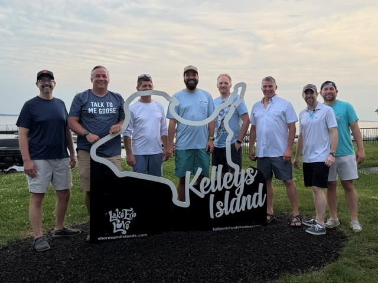
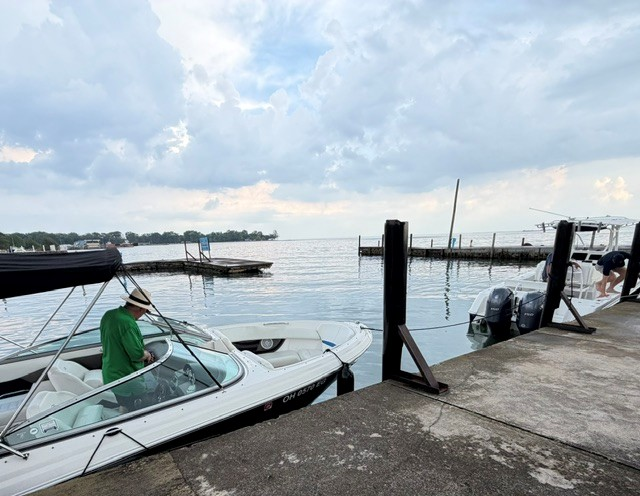
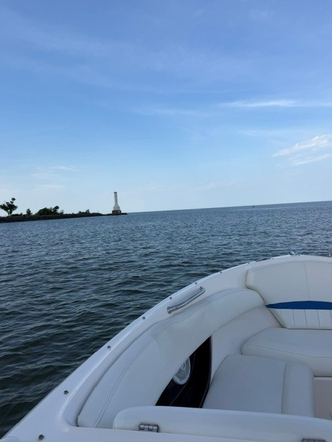

June 10, 2026 • Boats, island life, and a perfect Lake Erie evening.



Eight Dudes launched from George’s Boathouse and crossed Lake Erie for an evening escape to Kelley’s Island. The mission included boats, island wandering, good food, good conversation, and surprisingly cooperative weather.
Nobody fell overboard. No boats were purchased on impulse. The island survived our visit. By all measurable standards, the mission was a success.